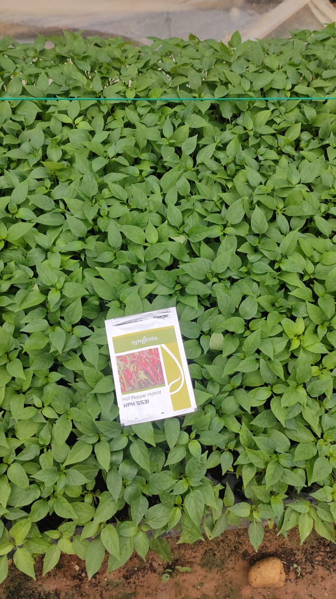
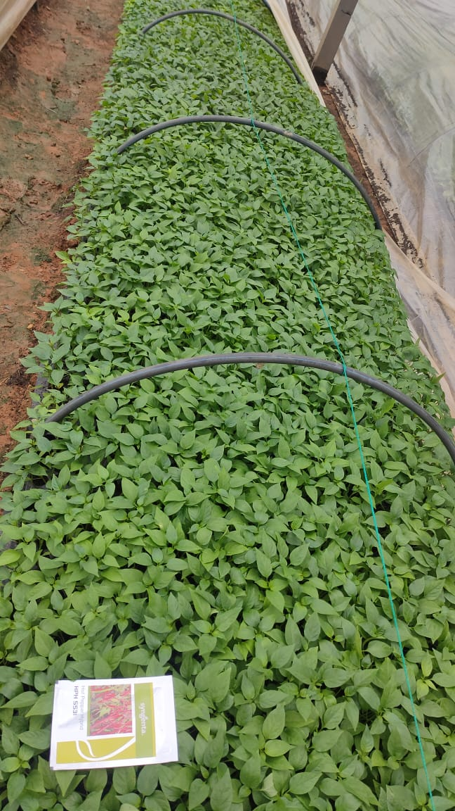

కూరగాయల నర్సరీ ఉపయోగాలు
కూరగాయల పంటల నర్సరీ నిర్వహణ యొక్క ప్రయోజనాలు వంటి చిన్న మొక్కలు మెరుగైన సంరక్షణ వ్యాధికారక సంక్రమణం, తెగుళ్లు మరియు కలుపు మొక్కలకు వ్యతిరేకంగా చిన్న ప్రాంతంలో నర్సరీని చూసుకోవడం చాలా సులభం. ... కూరగాయల విత్తనాలు ముఖ్యంగా హైబ్రిడ్లు ఖరీదైనవి కాబట్టి, వాటిని నర్సరీలో విత్తడం ద్వారా మనం విత్తనాన్ని పొదుపు చేయవచ్చు.
నర్సరీలో మొక్కలు పెంచడం వల్ల ప్రయోజనం
1.లేత మొలకలను చూసుకోవడం చాలా సౌకర్యంగా ఉంటుంది.
2.తెగుళ్లు మరియు వ్యాధుల నుండి మొలకలను రక్షించడం సులభం.
3.భూమి వినియోగం యొక్క ఆర్థిక వ్యవస్థ (ప్రధాన రంగంలో వ్యవధి తగ్గింది)
విలువైన మరియు చాలా చిన్న విత్తనాలను వృధా చేయకుండా సమర్థవంతంగా పెంచవచ్చు.
 